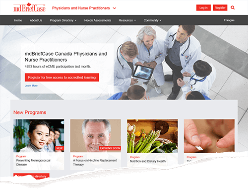
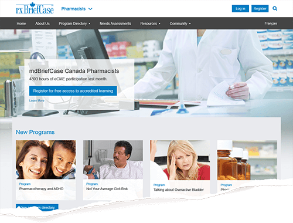
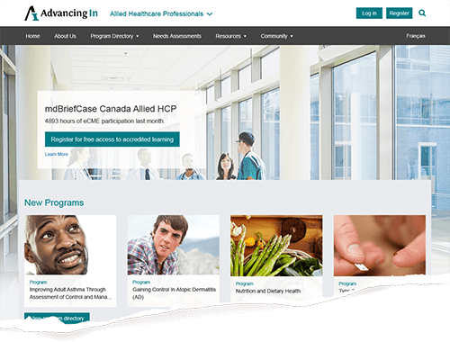
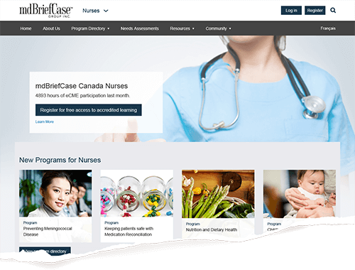
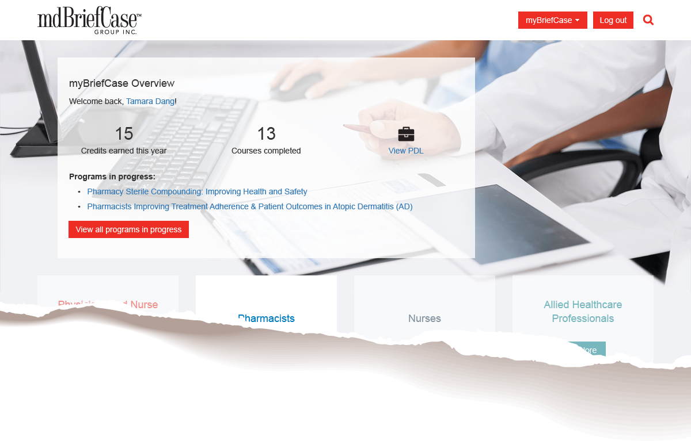
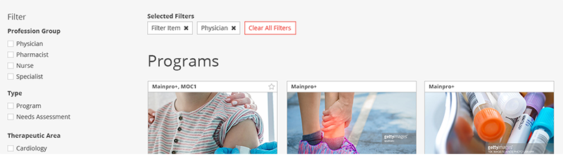

mdBriefCase has been providing free online continuing professional development (CPD) to healthcare professionals since 2001. The online environment allows healthcare professionals to conveniently keep up-to-date with medical advances and complete the educational requirements needed to maintain their license.
On this project, I was the sole UX/UI designer. The project team also consisted of a business analyst, a marketing manager, and the director of IT.
Tools used: Adobe XD, Adobe Photoshop, Adobe Illustrator
The goal of the site redesign is to consolidate the 7+ sites to improve brand familiarity, increase the number of active users, and implement new features that reflect best practices in online learning.
A survey was sent out to members asking for feedback about our site and programs. From the survey, we identified a couple of key challenges:
1. Unclear information architecture
Users listed finding relevant content as one of their greatest challenges with the site. Users were not familiar with how we label different content types. From the member survey and competitor analysis, we found that healthcare professionals prefer searching for content by therapeutic area.
2. Different branding for different user groups
Each profession group had its own website with its own URL, logo, and colours. These separate sites increase the amount of maintainence, marketing, and content development needed. Furthermore, due to the different branding, we dilute our brand recognition among healthcare professionals.
The first phase focused on maintaining a familiar user journey.
The sites, which were profession-focused, redirect to subdirectories that are styled in familiar colours so users will not be confused by the change.




Content is organized by target audience. Design is standardized and managed through stylesheets
The main improvements in phase one come from an improved user dashboard to increase engagement, and better metrics to help deliver more relevant content to users. The new features include allowing users to set goals or keep track of their learning.

Improved user dashboard on the main site helps users set goals and keep track of their learning.
Each profession subdirectory retains their main colour, with the other site colours acting as accent colours. The combination of colours is to familiarize users with all brand colours in preparation for Phase Two.
Existing brand colours are kept to ease the transition into the new site.
This phase makes drastic changes to the user journey. With clear content categories and a strong content directory and search/filter function, users have more flexibility in choosing what they want to learn. Information architecture was examined in a separate project.

Filters on content directory let users search for content in one place.
The final design features a simplier user flow and behaves more similarly to other health sites, thus reducing the learning curve for new users.
Due to the scope of the project and limited internal resources, this project was stalled. It is currently being redesigned and developed by external contractors.